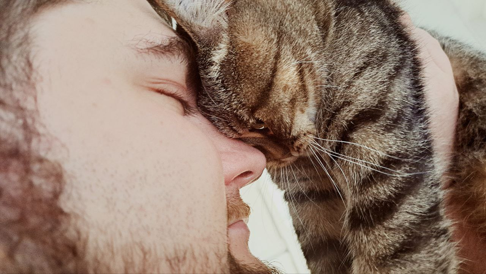

My little kitty - Mia
Моя киця, яку звати Мія, стала невідємною частиною мого життя. Вона - веселий та допитливий комочок пухнастого щастя, який робить мої дні кращими. Мії вже три роки, і кожен день вона принесла мені безліч неймовірних моментів радості та сміху.

Коли я вперше взяв Мію, вона була такою маленькою та беззахисною. Тепер вона виросла в енергійну та граціозну кішку. Її красива шерсть, яка пахне теплом індивідуальності, завойовала серце всіх, хто з нею зустрічається. Вона не просто домашня тварина, а моя вірна подруга, завдяки якій навчився цінувати прості радощі життя.
Мія також вчила мене відданості та турботи. Її ласкавий погляд завжди дарує відчуття затишку та безпеки. Кожен день з нею - це пригода, а кожен момент - нагадування про те, як важливо бути вдячними за наших домашніх улюбленців.
Переваги мати кішку:
- Щастя у домі
- Муркотіння заспокоює
- Нервова система у порядку коли кішка поряд
- Приєднання до широкої системи любителів кішок